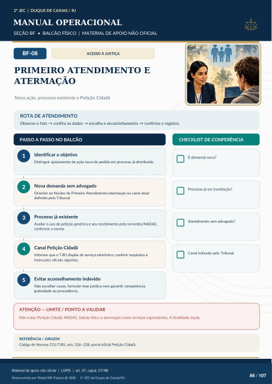

ACESSO À JUSTIÇA
PRIMEIRO ATENDIMENTO E
ATERMAÇÃO
Nova ação, processo existente e Petição Cidadã
ROTA DE ATENDIMENTO
Observe o fato → confira os dados → escolha o encaminhamento → confirme o registro.
PASSO A PASSO NO BALCÃO
CHECKLIST DE CONFERÊNCIA
Identificar o objetivo
Distinguir ajuizamento de ação nova de pedido em processo já distribuído.
Nova demanda sem advogado
Orientar ao Núcleo de Primeiro Atendimento/atermação ou canal atual definido pelo Tribunal.
Processo já existente
Avaliar o uso de petição genérica e seu recebimento pela serventia/NADAC, conforme a norma.
Canal Petição Cidadã
Informar que o TJRJ dispõe de serviço eletrônico; conferir requisitos e instruções oficiais vigentes.
Evitar aconselhamento indevido
Não escolher causa, formular tese jurídica nem garantir competência, gratuidade ou procedência. É demanda nova? Processo já em tramitação? Atendimento sem advogado? Canal indicado pelo Tribunal
ATENÇÃO — LIMITE / PONTO A VALIDAR
Não tratar Petição Cidadã, NADAC, balcão físico e atermação como serviços equivalentes. A finalidade muda.
REFERÊNCIA / ORIGEM
Código de Normas CGJ/TJRJ, arts. 326–328; portal oficial Petição Cidadã.
Ver também o infográfico original (página 86)
